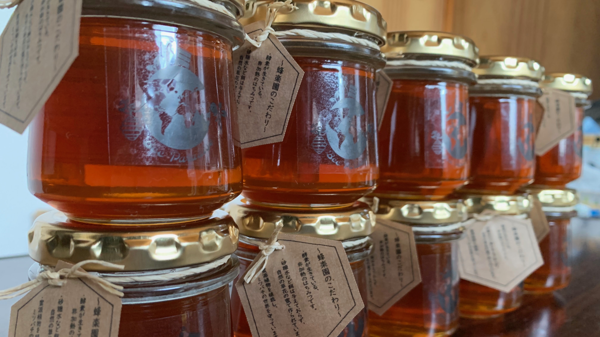
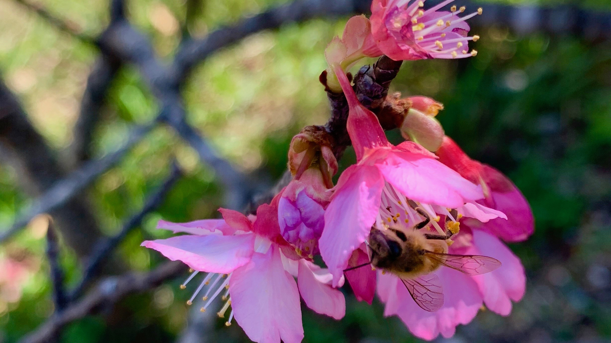

ABOUT US
-----------------------------------------------------------------------------
みつばつ1匹が一生に集められるハチミツは"ティースプーン1杯"
その結晶をあなたの元へ。
-----------------------------------------------------------------------------
沖縄県の野や山に巣箱を置いて蜂蜜を精製している養蜂家です。
蜜蜂たちは毎日沖縄の大きな自然と降り注ぐ太陽の元、せっせと蜂蜜をつくっています。
季節や花、場所によって、味や匂いも大きく変わる蜂蜜。
蜜蜂たちの結晶をぜひみなさんに味わっていただきたいと思っています。
蜜蜂たちは毎日沖縄の大きな自然と降り注ぐ太陽の元、せっせと蜂蜜をつくっています。
季節や花、場所によって、味や匂いも大きく変わる蜂蜜。
蜜蜂たちの結晶をぜひみなさんに味わっていただきたいと思っています。

含まれる栄養成分は150種類以上
はちみつの主成分は、果糖とブドウ糖。
その他、ビタミン類、ミネラル、
アミノ酸、酵素、有機酸、ポリフェノールなど、多くの栄養成分が含まれています。
疲労回復効果があり、また殺菌作用のある酵素を含んでいるためウイルス対策にも有効。
老化防止や不眠、脳の活性化にも繋がる食材と言われ、美容効果も期待できます。
ミツバチの役割
「世界の食料の9割を占める100種類の作物種のうち、7割はハチが受粉を媒介している」と言われ、実はあらゆる植物の生態系の大事な部分を担っている蜜蜂。
もし蜜蜂がいなくなると、いちご、リンゴ、桃、さくらんぼ、梅、メロン、スイカ、キウイフルーツなど、多くの種が受粉ができず存続できなくなると言われています。
